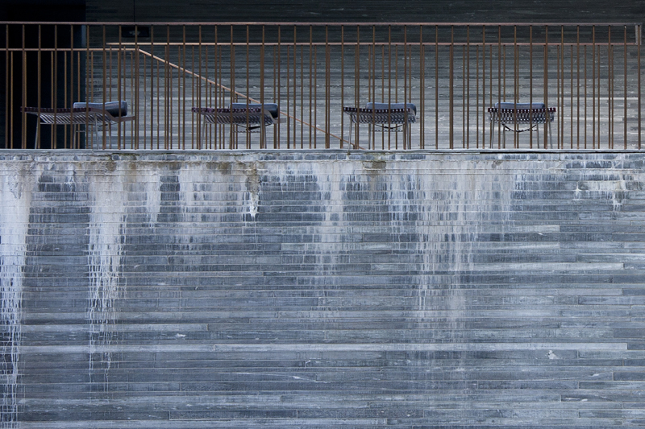

赶在十一前终于把原来的博客全部搬到了Github上，基于Jekyll，模板用的lhzhang制作的，个人非常喜欢。我稍微修改了下，字体改大了些，毕竟我的博客还是以字为主，加了个评论框，方便有兴趣的人一起讨论。
这次比上次用Wordpress花时间多得多，差不多连续干了三十多个小时才全弄完。学了git, Github, Jekyll还有一点点html,css，后来还把所有不是png的图又重画了一遍，生命不息，折腾不停。感觉我的老MAC快要不行了。
Jekyll基于Markdown的写作方式还是很爽的，前期费点劲，后期可以专注在写上，而且不用担心服务器的问题。
题图是两年前差不多同一时间，在Zumthor的Vals澡堂子照的，两年真快。